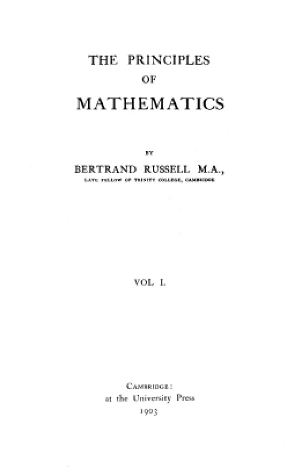

引言
照罗素自己的说法，他研究哲学的主要动机就是要找出确实可靠的知识，这一与笛卡尔相同的雄心壮志来自他早年两次思想上的危机：他失去了宗教信仰，而且对于必须以未证明的公理作为几何学的基础感到失望。他最早真正有独创性的哲学努力就是要证明数学是建立在逻辑的基础之上。这一努力如果成功本会给数学知识提供确实性的基础。这个计划失败了，然而由此却产生了许多重要的哲学进展。随后罗素转到一般哲学问题上来，在这里就更难找到确实性。尽管确实性难以捕捉，他还是努力构建一些理论，希望它们会提供满意的解决。他一再重新研究这些问题，发展并且改变自己的观点，但对于使用来自他的逻辑工作的分析技术却一直抱有信心。他觉得最终能够取得某种程度的成功，尽管他知道在哲学同行中很少有人会同意他的看法。
当人们考察罗素的哲学工作时，如果暂不去看这是很长时间内演变的结果，经常并且长期由于其他活动而中断这一事实的话，人们就会惊讶地发现其演变的连续性和逻辑性有多强。用罗素本人对自己哲学发展所说的话来讲，他的哲学生涯分为两个部分：第一部分是他早期与观念论的短暂调情，第二部分则是受到他所发现的新的逻辑技术的启发，从此一直支配着他的哲学观：
（《我的哲学发展》，第11页）
革命以后的演变是重大的，但是每走一步都受到必须解决前面阶段留下的问题的推动，或者如果问题太大，就另外寻找前进的途径。查尔斯·布劳德说“伯特兰·罗素先生每过一年左右便会搞出一套新的哲学体系，而G.E.摩尔则一个也搞不出来”。在罗素所关注的问题上所显示的辩证连续性表明这句俏皮话对于摩尔来讲也许是对的，但却不能用在罗素身上，特别是它暗示罗素在其哲学历程中所走的步伐有着某种反复无常的东西。
在取得学位与发现皮亚诺之间的年月——大体说是1890年代——罗素接受了他在剑桥大学的老师所喜欢的德国观念论。他的研究员论文的出版文本是从康德观点做出的关于几何学的阐述，但是他主要还是皈依黑格尔。他写过一篇黑格尔观点的数论，还计划写出一套完整的关于各门科学的观念论辩证法，目的是以黑格尔的方式证明一切实在都是精神性质的。
罗素后来抛弃了这项工作，并以他特有的直率贬之为“地地道道的废话”（《我的哲学发展》，第32页）。正如我们已经看到的，他的哲学方法的革命产生于他同摩尔一起对观念论的反叛和他发现了皮亚诺的逻辑著作。最后一点特别重要，因为这唤起了罗素要从逻辑导出数学的雄心壮志并为此提供了手段。1900到1910年之间的岁月主要就用在这项工作上，大量有价值的哲学成果都产生在这个过程之中。这一计划是在《数学的原理》（1903）中提出的，而完成细节的努力就促成了《数学原理》（1910—1913）的问世。在罗素同时写出的经典性哲学论文当中就有《论指示》（1905），其中有些思想在以后的哲学史上产生了极其重要的影响。
《数学原理》的出版结束了有关的逻辑工作，而这些年的哲学工作却在此后继续进行。罗素着手把这部著作中发展起来的分析技术应用到形而上学（探讨实在的本性）和认识论（探讨我们怎样得到知识和验证知识）的问题上来。他那本经得起时间考验的经典小书《哲学问题》（1912）概述了他当时所抱的形而上学和认识论的观点。他打算在以后的著作里对这些观点做更详细的阐述，并于1913年开始写一部大书的初稿，即在他去世后才出版的《认识论》（1984），但是他对其中某些方面感到不满意，所以并未成书出版，而是通过一系列论文形式发表了其中的一部分。与此同时，怀特海建议他使用逻辑技术去分析知觉，这一启发的成果是他在哈佛大学所做的一系列讲演，后来汇集成《我们关于外部世界的知识》（1914）一书出版。这本书以及同一年发表的一篇名为《感觉材料与物理学的关系》的论文表明，罗素有一段时期暂时转而采纳了某种类似现象论的立场。“现象论”的观点认为，知觉的知识是可以通过我们对感觉经验的基本材料的亲知来分析的。（我说“某种类似现象论”的立场，因为尽管罗素在半个世纪以后将这些观点称为现象论的观点，在原来的著作中却并非如此明确；这一点将在以下适当的地方加以讨论。）四年以后，罗素在另外一系列讲演中把他的分析方法应用到物体和关于物体的讨论上去。他给这些讲演取名为《逻辑原子主义的哲学》。与此同时，他发表了一本实际上是《数学原理》的通俗版本的书，说明数理哲学的基本思想。这本书就是《数理哲学引论》（1918）。
在1920年代，罗素试图扩大并改进他的分析技术，把它们应用到心理学和物理学的哲学上来。这种努力的第一个成果是《心的分析》（1921），在书中他的准现象论被用来分析心理的实体。第二个成果是《物的分析》（1927），罗素在书中试图通过事件来分析物理学的主要概念，例如力和物质。这本书的论点带有强烈的实在论倾向；罗素认为，分析物理学的基本概念却不承认某些不靠对它们的知觉而独立存在的实体是行不通的，这也标志着他与现象论的暂时结合已告结束。这也许可以叫作对实在论的“回归”，因为罗素在写《我们关于外部世界的知识》之前曾经信奉过一种比较极端的实在论。
罗素重返某种形式的现象论或接近现象论的立场之后，又重新考察一些他现在觉得在现象论的假定下未曾得到适当处理的问题。结果他就写成了《对意义和真理的探究》（1940），在这里他又一次讨论了经验与偶然性知识的关系；他在《人类的知识》（1948）一书中则特别重新考察了一个在先前著作中没有充分讨论的问题，即一般认为在科学中使用的非证明性（非演绎性）推理这个重要问题。

图7 1903年出版的《数学的原理》扉页，该书的前提是，数学与逻辑是一回事
对罗素思想发展的每一阶段都值得做详细的讨论，这可以在后面延伸阅读书目所列著作中找到。在以下几节中我将概括地讲述这些阶段。
对观念论的否定
观念论有许多不同的形式，但其基本主张却都认为实在从根本上讲是精神性质的。“观念–论”（Idea-ism）也许是个更容易让人明白的名称。这是哲学上的一个专门名词，同英语中“理想”（ideal）一词的通常意思毫无关系。照贝克莱主教所主张的那种观念论来讲，观念论的论点是：实在归根结底是由精神群体及其观念所构成。其中一个精神无限广大，产生大多数观念；贝克莱认为这就是上帝。照后来T.H.格林和F.H.布拉德雷（他们都深受德国观念论的影响）所主张的观点讲，观念论的论点是：宇宙归根结底是由一个单一的精神所构成，这个精神可以说是经验其自身的。他们论证说，我们有限的、部分的和个人的经验是相互矛盾的，或者说至少起着误导的作用。这些经验告诉我们，世界是由众多的各自独立的存在实体所构成，这些实体当中有许多（如果不是大多数的话）是物质的而不是精神的。这些众多的事物只是“现象”，“现象”蒙蔽而不是代表实在的本性。这就蕴涵着一个与观念论观点相伴随的重要论点（这是罗素已经认识到要接受的论点），即因为事物的众多性是一种令人产生误解的现象，所以真理就是：宇宙中每件事物都与每件另外的事物相关，所以宇宙归根结底是一个单一的事物——每件事物都是“一”。这种观点叫作“一元论”。
当摩尔与罗素在1898年反驳观念论（摩尔的《判断的性质》一文的发表是这一事件的标志）的时候，他们攻击了观念论的两个主要论点，即经验与经验对象是不可分开的相互依赖关系，以及每件事物都是一。因此他们两人采取了“实在论”论点，即认为经验对象并不依靠关于对象的经验，也接受了“多元论”的论点，即认为世界上存在许多各自独立的事物。
罗素看到观念论和伴随它的一元论来自一种涉及关系的观点，而一旦否定了这一观点，便会走向多元的实在论。表示关系的句子有“A在B的左边”“A比B早”“A热爱B”等。罗素认为，按照观念论的看法，一切关系都是“内在的”，也就是说关系是其所联系的各个项的属性，而详尽讲来关系就显示为在充分描述下由关系项所形成的整体的属性。有时这似乎是言之成理的；如在“A热爱B”中A对B的热爱是A的一个属性（也就是说，是一件关于A的本性的事实），而“A热爱B”所指示的复合事实则具有B被A热爱的属性。但是如果一切关系都是内在的关系，那么立刻就会得出这一结论，即宇宙构成了观念论哲学家哈罗德·乔基姆所说的一个“有意义的整体”，因为这意味着任何一件事物都与每件另外的事物有关乃是该事物的部分本性，并且因此充分描述任何一件事物就会讲出关于整个宇宙的一切知识，反过来说也对。布拉德雷是这样阐述他的论点的：“实在是一。实在必须是单一的，因为认为众多性是真实的乃是自相矛盾。众多性蕴涵着关系，而通过关系它却不自愿地一直在表明有一种高级的统一。”（《现象与实在》，第519页）
与这种观点相反，罗素争论说观念论者犯了一个根本性错误。这就是他们把一切命题都看成属于主谓语形式。看一下这个句子：“这个球是圆的。”这个句子可以用来表达一个命题，一个已知的球被表述为具有圆的属性（“被表述”的意思是：关于，说到）。按照罗素的看法，观念论者误认为一切命题，甚至包括关系命题，最终都属于主谓语形式；这就意味着每个命题归根结底都必定构成对于整个实在的一个表述，而关系本身则是不真实的。举例说：按照观念论者的看法，“A在B的左边”这个命题应该正确理解为：“实在具有A显现在B的左边这种属性”（或某种类似的说法）。
但是如果人们看到许多命题属于不可化约的关系形式，那么就会看出一元论是荒谬的。说许多命题是不可化约的关系命题也就是说关系是真实的或“外在的”——关系并非植根于它们所联系的关系项上；“在左边”的关系并非本来就属于任何一个空间客体，这就是说没有任何空间客体必然在其他事物的左边。罗素争论说，为了证明“A在B的左边”是对的，就必须有一个A和与之分离的B，这样才能使前者与后者处于“在左边”的关系。当然，说有多于一个的事物也就是驳斥了一元论。
就罗素来说，驳斥一元论就是驳斥观念论，因为观念论的要害就在于它认为经验与其对象之间的关系应当是内在的；这实际上是说没有这种关系；这实际上又等于说关系是不真实的。但是照罗素的相反观点看，关系是真实的，经验不能与经验对象混同；也就是说这些对象在经验之外独立存在。而这就是罗素和摩尔所指的实在论的要旨。
罗素认为，所有观念论者（包括莱布尼茨在内）以及以前的经院哲学家所主张的实体与属性的形而上学都持有一切命题都属于主谓语形式的看法，这一点是否正确是可以争论的。但是他确实认为自己发现了以前哲学中一个非常重大的缺点。在驳斥了观念论之后，罗素有一段时间走到了另一个极端，即对一切事物都持有实在论的立场。照他自己的说法，他是一个“朴素的实在论者”，意思是说他相信物体的一切被知觉到的属性都是物体的真正属性；是一个“物理实在论者”，即相信物理学中一切理论性实体都是“真正存在的实体”（《我的哲学发展》，第48—49页）；是一个柏拉图式的实在论者，即也相信“数、荷马诸神、关系、神话怪物和四维空间”的存在或者至少相信其“实有”（一种受限制的或较低程度的存在）（《数学的原理》，第449页）。罗素后来对这一繁茂的宇宙用“奥卡姆剃刀”进行了修剪，后者也就是不让实体不必要地增长的原则。举例说，如果物理客体可以完全用原子内的实体加以说明，那么宇宙的一个基本事物清单就不应该包括树木以及构成树木的夸克、轻子和计量粒子。罗素后来就是这样使用分析技术的。但是他仍然相信《数学的原理》中无所不包的实在论，这是他1900年接触到皮亚诺的著作之后又回到的立场。
数学的基础
莱布尼茨曾经梦想创立一种普遍的符号语言（characteristica universalis），即一种普遍的和完全精确的语言，使用它将会解决一切哲学问题。罗素在其论述莱布尼茨的书中看出这是一种想建立符号逻辑的愿望。当时罗素心目中的符号逻辑是指乔治·布尔在19世纪中叶发展起来的“布尔代数”。但是当时他并不认为，莱布尼茨关于哲学问题能够靠使用一种演绎逻辑系统的技术而得到解决的看法是对的，理由是任何真正重要的哲学问题都是关于“演绎之前”的问题，即一些在作为推理起点的前提中所涉及的概念或事实。罗素争论说，不管这些概念或事实是什么，它们不能由逻辑来提供；逻辑只能帮助我们就它们进行推理。
但是罗素在接触到皮亚诺的著作之后改变了自己的想法。皮亚诺在逻辑技术上取得的进展（弗雷格已经先走了这一步，但当时皮亚诺和罗素都不知道此事）立即让罗素想到怎样表述逻辑的基本原理，以及怎样表明两个至关重要的道理：首先是数学概念怎样能够靠这些原理加以界定，其次是一切数学真理怎样根据它们得到证明。简单说，这启发了罗素去表明数学与逻辑是一回事。这就是《数学的原理》及其更为详尽完备的版本《数学原理》两部著作的目的。
从逻辑导出数学的方案被称为“逻辑主义”。在《数学的原理》一书中，罗素并未对计划的这一部分做出严格的证明，他只提出了非正式的概述。他把严格的证明留给了《数学原理》。推迟到《数学原理》才完成这项工作的主要理由是，他发现了一个威胁到整个计划的悖论。
罗素的首要工作是用无可再少的纯逻辑概念来界定数学的概念。（这里将出现三段非正式的讲技术的文字，读者不必望而生畏。）设“p”与“q”代表命题，这些逻辑概念是：否定（非p），析取（p或q），合取（p并且q），蕴涵（如果p，那么q）。除了这些运算之外，还有表示内部结构的符号：“Fx”是一个其中有代表任何个体的变量“x”的函项，而“F”则是代表任何属性的谓词字母。这样“Fx”就表示x是F（它所表示一个例子是：“这棵树高”）。罗素能够使用的重要技术进展之一是一种量化这类函项的方法。使用目前逻辑上通用的符号，表示量化的方式如下：（x）表示“所有的x”，所以（x）Fx表示所有的x都是F，（Ǝx）表示“至少有一个x”，所以（Ǝx）Fx表示至少有一个x是F。最后则是等同的概念：“a=b”表示a和b不是两件东西而是同一件东西。使用这种简单的语言就可能界定数学的概念。
较早的数学家已经探讨过数学概念之间的关系，看出这些概念全都可以化约为自然数（1、2、3等用来计算的数字），尽管还没有一个人精确证明这一点。所以计划的第一步就是用逻辑概念来界定自然数。这是弗雷格早已做的工作，尽管罗素在当时并不知道这件事。
这种界定使用了类的概念：2是由所有成双的事物组成的类，3是由所有三件事物组成的类，以此类推。而反过来“双”则被界定为具有分子x和y的类，这里x和y互不等同，而且如果这个类中有另外的分子z，那么z等同于x或y。数的一般定义是通过相似的类所构成的集合来表述的，在这里“相似性”是一个表示一一对应的关系的精确概念：如果在两个类的分子之间可以确定具有一一对应的关系，这两个类便是相似的。
分清这些概念之后，许多问题便得以解决，其中有：怎样界定0和1（罗素指出，这些是最困难的数学问题当中的两个），怎样克服“一与多”的难题（一把椅子包含多少事物：它是一还是多——如果你算一下其各部分和成分的话？）以及怎样理解无穷大？一旦界定了全部数字，那么其他种类的数（正数和负数、分数、实数、复数）便不会有多大困难。
所以计划的第一部分——用逻辑概念界定数学概念——看起来大部分是不成问题的，只要用上正确的技术。第二部分——完全属于逻辑主义的部分，它表明数学真理可以从逻辑的基本原理得到证明——却遇到了极大的困难。
照罗素当时的观点看，造成这种困难的主要原因是他发现了悖论。这个悖论涉及上面概述的一个对该计划至关重要的概念，即类的概念。在罗素的研究过程中，他被引向考虑这一事实，即有些类是其自身的一个分子，而有些类则不是。举例说，茶匙组成的类不是一个茶匙，所以不是其自身的一个分子；但是不是茶匙的事物组成的类却是其自身的一个分子，因为它不是一个茶匙。那么由所有这些不是其自身的类所组成的类又是什么情况？如果这个类不是其自身的一个分子，那么根据定义它便是其自身的一个分子；而如果这个类是其自身的一个分子，那么根据定义它便不是其自身的一个分子。因此它既是其自身的一个分子又不是其自身的一个分子。这就出现了悖论。
最初罗素认为毛病出在某个微不足道的错误上，但是在他为了解决问题付出很大努力并且在征求过弗雷格和怀特海的意见之后，他才明白这里的问题是个灾难。罗素在发表《数学的原理》时并没有找到补救的办法。但是到他与怀特海合写《数学原理》时，他认为已经找到了一条出路，然而他的策略却招来很多争议。情况可以讲述如下。
罗素发现，要从纯逻辑的公理演绎出数学的定理不能不依靠辅助性公理来进行，这些辅助性公理使得证明算术和集合论中的某些定理成为可能。两个辅助性公理（其细节并不重要；我提到它们是为了完整性）是“无穷公理”（意思是说世界上有无穷多的集合）和“选择公理”（有时也叫“乘法公理”，意思是说对于每一个由没有相同分子的非空集合组成的集合来说，都存在着一个与每个子集恰好有一个相同分子的集合）。人们需要这些公理，以便让数用类来界定，正如上面所说的那样。但是这两个公理看来都包含一种困难，这就是它们的性质都是关于存在的，即它们表示“有如此这般的东西”。就第一个公理说是数，就第二个公理说是集合，而这就成了一个问题，因为逻辑并不应该涉及什么事物存在或不存在，而只是关心纯形式问题。但是罗素却发现了一个解决方法，即把数学句子看作条件句，也就是具有“如果——那么——”形式的句子，用这些公理填满“如果”的空白：这样它们就表示“如果你以这个公理为前提，那么——”。由于这些条件句本身可以从逻辑公理中推导出来，表面上引进的关于存在性质的考虑就没有什么重要性了。
但是第三个辅助性公理即“可还原性”公理产生的困难却大得多。这是罗素用来克服悖论问题的公理，然而其他逻辑学家却认为难以接受。
可还原性公理与罗素的“类型论”是联系在一起的。要理解这个理论，通俗一点讲就是要看到出现罗素所发现的悖论乃是因为，把不是其自身的一个分子这种属性应用到由所有具有该属性的类所组成的类上。如果引进一种限制，使这种属性只应用于子类，而不应用于由这些类组成的类，那么悖论就不会出现。这使人想到在属性之间应该有某种类似层次区别的东西，例如那些归属于某一层次的属性不能归属于高一级的层次。
有一种类型论的说法，它比罗素的类型论要简单；这种类型论抓住了这一直观认识并被某些逻辑学家认为言之成理。这是数理哲学家弗朗克·拉姆齐所提出的，叫作“简单的类型论”。其要点是：应用于某一话域的语言具有一级层次的表达式（即名称），它们指称该领域内的事物；它具有二级层次的表达式（即谓词），它们只指称这些事物的属性；它还具有三级层次的表达式（即关于谓词的谓词），它们只指称那些属性的属性——以此类推。规则是每一个表达式都属于一个特殊类型并且只能应用于整个等级中下一个类型的表达式上。依照这种非正式的概述，人们会看出这种策略怎样让人想到一个解决悖论问题的方法。
罗素的较复杂的类型论叫作“类型支论”。（如何正确理解这个理论是个有争议的问题，可参阅海尔顿著《罗素：观念论与分析哲学的兴起》的第七章，但是可以把下面的概述当作一个初步的简要说明。）罗素引进类型支论（即在类型之内再分为“阶”）的理由在于他认为在解决悖论问题上特别需要它。他认为悖论问题产生于试图用包含涉及“一切属性”的表达式来界定属性，所以关于“一切属性”的说法必须严格加以限制。比如说，类型1的属性因此就要再分为不同的阶：“一切属性”这个表达式不出现在第一阶属性的定义中；“第一阶的一切属性”这个表达式出现在第二阶属性的定义中；“第二阶的所有属性”这个表达式出现在第三阶属性的定义中；以此类推。因为从不涉及不从属于一个特定阶的“一切属性”，所以没有任何属性是通过涉及它所从属的整体来界定的。这就避免了悖论。
但是这样做却付出了很大代价。它给实数理论引进一些困难，因为把其中最重要的定义和定理都给阻挡在外了。为了克服这个问题，罗素又引进了可还原性公理，这个公理试图找到一种方法，将一个类型中的阶还原为最低的阶。这一策略曾被一位评论家说成是使用“暴力”来拯救实数理论，罗素在《数学原理》的第二版（1927）中也放弃了它。但是因为他不能承认类型支论之外还有另外的解决办法，所以就陷入了困境。为了应付这种局面，拉姆齐才提出了上面简述过的“简单”类型论。（也应该看到拉姆塞的理论也有其自身招来的争论。这个理论提出了一个有争议的主张，即认为那些将属性归属自身的定义所带有的循环性是无害的；它还要求对未下定义前的整体的存在抱着同样有争议的实在论观点。）
罗素雄心勃勃的逻辑主义构想陷入了困难境地，部分由于这些构想自身的原因，部分则由于逻辑主义本身就行不通，正如以后的数学发展（特别是库尔特·哥德尔的工作）所表明的那样。哥德尔表明在任何适合数论的形式系统中都有一个不可判定的式子，即这个式子或其否定均不能得到证明。由此得出的一个推论是，这样一个系统的一致性不能在该系统之内得到确认。所以人们不能认为数学（至少是其中大部分）可以有一组足以产生所有数学真理的公理。罗素的工作表明公理的方法有其深刻的固有的局限性，也表明要证明许多种类的演绎系统的一致性，唯一的办法就是使用一种很复杂的系统，以致其自身的一致性也同样让人置疑。
罗素要求他的逻辑主义方案完成一种排除可能有矛盾存在的形式系统化工作。哥德尔的工作说这是不可能的。由此得出的结论必然是：《数学的原理》以及特别是《数学原理》的成就不在于它们实现其既定目标的程度，而在于它们对逻辑和哲学所产生的也许可以称为“副产品”的许多重要影响。
摹状语理论
最有影响力的“副产品”之一就是罗素的“摹状语理论”。罗素在创建这个理论上达到了几个不同的目标。他从反对观念论的争论中得到的一个教训是：语言的表层语法可能对我们所说的话的意义产生误导作用。正如上面所指出的，导致哲学家采用实体与属性的形而上学（正如哲学史上的争论所表明的，这是一种陷入深刻困境的观点）的理由是，他们将一切命题都看作基本上属于主谓语形式。“桌子是木料制作的”和“桌子在门的左边”都被认为以“桌子”这个表达式为主语，并以两句中在连系词“是”后面的表达式为谓语。但是尽管第一个句子也许可能表达一个具有该种形式的命题，第二个句子却是某种十分不同的命题，即一个关系命题：实际上它有两个主语（“桌子”和“门”），它断言两者处在一种特殊的相互关系之中。所以第二个句子的逻辑形式十分不同于第一个句子的逻辑形式，因此按照罗素的观点，需要有一种方法显示我们所说的话的深层形式，以便帮助我们避免哲学上的错误。
罗素采取的下一个重要步骤便是将新逻辑应用于这项工作上。正如用它来界定数学的概念和运算一样，我们也能用它来分析我们关于世界所说的话，从而得出实在的正确图像。
显示摹状语理论怎样完成这项工作的一个方法就是讲述它怎样解决一个关于意义与所指的重要问题。罗素处理这个问题的背景可以在奥地利哲学家亚历克修斯·迈农的著作中找到。罗素认真研读过他的著作，所以曾在早期受到他的影响。迈农认为指示表达式（类似“罗素”的名字和类似“《数学的原理》的作者”的摹状语）只有在它们所指示的事物存在时才能有意义地出现在命题（严格说是表达命题的句子）之中。迈农争辩说，假定你说“金山不存在”，显然当你断言金山不存在时，你是在谈论某件事物即金山；而由于你所说的话有意义，所以在某种意义上必然有一座金山。他的理论是：凡是人们可以谈论（命名、指称）的事物都必然因之而不是存在就是有着某种“实有”，即使这种实有够不上存在，因为不然我们所说的话便会失去意义。
罗素起初接受这个观点，事实上在《数学的原理》中还抱有这种看法，这就是如前面所指出的，为什么他在该书中表示相信“数、荷马诸神和神话怪物”存在或者至少实有的理由。但是这个观点的不可信服不久便冲击了他所谓的“生动的实在论”，因为这就使宇宙不仅充满了抽象的和神话中的实体，而且还充满了类似“圆的方”这样不可能有的事物。而这正是罗素所不能接受的。
罗素使用逻辑技术来设计一个美好的解决方案。他并不愿意放弃那种认为一个名称只有在被其命名的某种事物存在时才有意义的看法，但是他争论说，唯一的“逻辑专名”是指示人们能够亲知的特定实体的名称。罗素所说的“亲知”是指一个心灵与一个客体之间无中介的直接关系；其实例包括其对感觉材料的知觉认识（参看下文）以及关于命题等抽象实体的知识。只有逻辑专名可以正当地占有句子中主语的位置。最好的例子是“这”和“那”等指示代词，理由是每次使用它们时都保证有其所指。所以其他表面上的名称表达式事实上根本不是名称表达式；它们是（或者在分析之后显示为）“定摹状语”，即具有“那个如此这般的事物”的形式的表达式。这种表达式的重要性在于：包含摹状语的句子经过分析之后，摹状语消失了，故而人们所说的话有无意义并不依赖某种实体的存在或实有，而按照表层语法，这个实体正是摹状语表面上所指示的东西。
通过考察一个例子就可以看清这一点。且举“法国现在的国王是个秃子”这个句子，而说话时法国并没有国王。根据句子永远是非真便假的设定，人们如果被问到这个句子是真还是假时应当怎样回答？看来显然是要说“假”，不是因为现在的法国国王的头发茂密，而是因为他不存在。这一点让罗素打开了解决问题的思路。他争论说，包含占有语法上主语位置的定摹状语的句子，经过分析才看出原来是一组句子的缩写，这些句子断言某个具有作为法国现在的国王这一属性的事物存在、独一无二并且没有头发。所以“法国现在的国王是个秃子”等于说：
（1）有一个法国国王；
（2）只有一个法国国王；
（3）不管谁是法国国王，他一定是个秃子。
句子（1）断言其存在；句子（2）断言其唯一性；也就是说它具有摹状语中定冠词“the”所蕴涵的意思，即所谈论的只有一件事物；而句子（3）则是谓语表述。原来的句子“法国现在的国王是个秃子”在所有这三个句子都真时便是真的；如果其中有一个假，它便是假的。当前这个句子是假的，因为句子（1）假。
在句子（1）到（3）中，摹状语“法国现在的国王”都没有出现。摹状语消失不见了（已经被分解掉），没有必要为了让这个句子有意义而召唤一个潜存的法国国王。
由于日常语言的不完善以及句子的表层形式能够偏离其深层的逻辑形式，罗素说这样给出的分析还不够完善。这就需要用符号逻辑的“完备语言”来加以表达。只有这种语言能够完全清晰地显示“法国现在的国王是个秃子”所断言的内容。这个句子的逻辑分析用现在的标准记法写出来就是：
（Ǝx）［Fx＆（y）（Fy→y=x）＆Gx］
“＆”在这一串符号中代表“和”，将这串符号分成三个相连的式子，所以上面（1）到（3）这三个句子就分别是：
（1）（Ǝx）Fx
这个式子读作“有一个是F的x”。设“F”为“具有作为法国国王的属性”；这个式子就表示“有某个是法国国王的事物”。［当然，如同方括号所表示的，存在量词（Ǝx）约束着整串中每次出现的x。］
（2）（y）（Fy→y=x）
这个式子读作“对于每一个y来说，如果y是F，那么y与x等同”。这个式子表示定冠词“the”所蕴涵的唯一性，即只有一件事物具有属性F。
（3）Gx
这个式子读作“x是G”。设G为“没有头发”；这个式子就表示“x没有头发”。
一些反对罗素理论的意见主要都表现为反对他认为摹状语从来不是指称表达式的主张，并对他关于包含在语法上占有主语位置的摹状语的句子的分析提出质疑。就后一种情况而言，引起一些人争论的是他认为定摹状语同时体现唯一性和存在的主张。
关于唯一性这个问题有个例子，即某个人说“婴儿在哭”。罗素的分析似乎蕴涵着这句话只有在世界上仅仅有一个婴儿的情况下才为真。解决的办法是要求有一种含蓄的理解，即这句话的语境就显示出包容在其应用范围之内的世界有多大。假如一个婴儿的父母住在一排公寓里，这里有几十个婴儿都在哭，他们的婴儿也跟着哭起来。如果有人说“婴儿在哭”，那么显然不会产生误解，因为语境把指称限制到他们对之有特殊兴趣的那一个婴儿身上。看来这是靠直观就认识到的，它让人想到怎样推翻反对的意见，即借助于对“话域”的含蓄的或明言的限制可以做到。
关于存在的问题要更复杂一点。P.F.斯特劳森在一篇被多次引用的关于罗素的理论的讨论中争论说，在说“法国现在的国王是个秃子”时，人们并不是在陈述有个法国现在的国王存在，而只是预先假定或设想他存在（《论指称》，见《心灵》杂志，1950年）。这是通过下述事实来表明的，即如果某人讲出这个句子，他的对话者不大可能说，“这是假的”，而会说，“法国现在没有国王”，从而指明他实际上并没有做出一个陈述，即他并没有说出任何真或假的句子。这就等于说摹状语必然是指称表达式，因为摹状语对于包含它们的句子的真值的重要贡献是：除非它们有所指称，所说的句子就根本不具有真值。
斯特劳森使用“预先假定”这一概念来说明（照他的相反的观点看）摹状语怎样在句子中起作用。他这个概念引起不少批评性的争论，而他准备允许有“真值空白”的态度也是一样。“真值空白”就是在有意义的句子中不存在真值，这就破坏了“两值原则”，即每个（陈述的）句子必然具有“真”“假”两个真值当中的一个。但是对于他给予罗素的批评的主要反应却无疑是说，他的论证所依据的事实（即我们在某人说“法国现在的国王是个秃子”时不会说“这是假的”）并不意味着摹状语不能被看作是做出了存在的断言。我们的回答会是否认有一个法国国王，这也许是对的；只说“这是假的”毕竟有可能误导我们，因为它可能蕴涵某种十分不同的意思，即有一个头发浓密的法国国王。但是如果我们回答“现在法国没有国王”，我们实际上就已经承认使用摹状语就是做出存在的断言，因为这正是该否定句所要回答的问题。
另一个反对意见是认为罗素没有看出摹状语可以有两种不同的用法。且看下面两种情况。第一种情况是：你看到一幅你喜欢的绘画，于是就说“画这幅画的艺术家是个天才”。你并不知道这位艺术家是谁，但是你却把天才归属给他。第二种情况是：这幅画是《岩间圣母》，你还知道创作这幅画的人是列奥纳多·达·芬奇。在第一种情况下，摹状语的用法是“归属性的”，而在第二种情况下，其用法则是“指称性的”。按照提出这一批评的凯斯·唐奈兰的意见，罗素的说法只涉及归属性用法，这是有重大关系的，因为有这样的情况，即一个摹状语能够成功地指称某个人，即使这个摹状语并不适用于他——“那个在那边喝香槟酒的人是个秃子”可能被用来说出某种真实的情况，即使这个秃头的人杯子里只盛着汽水。
一种反应是在分析上区分开语义的与语用的层次。罗素的说法适用于语义的层次，这就使“那个喝香槟酒的人是个秃子”在字义上成了假的句子，因为虽然他真是个秃子，他喝的却是水，在语用层次上则成功地做出了指称，从而传达出一种真实情况，因为这种使用完成了任务。但是罗素也许可以争辩说，由于他的分析针对的是普遍认为具有特定指称作用的某一类表达式，他所说的话仍然有效；关于用法的问题则是另外的事。
然而这种反应并未提出用法与意义之间关系的问题。如果用法是意义的一大部分，关于用法的事实就必须在说明表达式怎样起作用上占有中心的位置。应该把多大的分量放在用法上，这个问题是有争议的；一种看法主张用法几乎就是全部意义，另外一些观点则反对这一主张。罗素的理论要求我们把表达式的语义学与表达式的用法当作至少是可以分离开的问题。
由于这个以及其他主要与哲学上至关重要的指称问题（即语言怎样钩住世界的问题）相关的理由，罗素的摹状语理论在语言哲学的争论中起着重要的作用。为了当前的目的，重要的是用它作为一个他应用分析技术来解决认识论和形而上学方面问题的实例，正如我们现在将看到的那样。
知觉与知识
哲学的中心问题之一是：知识是什么以及我们怎样得到知识？约翰·洛克及其经验主义传统的继承人争论说，关于世界的偶然性知识的基础在于感觉经验，这要靠使用五官，必要时还要靠望远镜等仪器的帮助。罗素同意这种看法，但是经验主义面临来自怀疑主义论证的挑战，这些论证旨在表明我们所认为的知识可能常常（也许一直）没有合理的根据。这有各种不同的原因。我们有时在知觉或推理上发生错误，我们有时做梦而不知自己是在做梦，我们有时由于发烧或饮酒而产生错觉。在我们断言自己认识某种事物的场合，我们怎能确信这种断言不会由于以上任何一种方式的影响而发生动摇？
1912年罗素在《哲学问题》一书中最早尝试系统地回答这些问题。他问道：“有没有任何不让讲道理的人能够怀疑的确实的知识？”他做出了肯定的回答；但是这种确实性后来却被证实远远不是经过证明的绝对确实性。
根据对知觉经验的直接观察（比如说一张桌子由于知觉者或知觉条件的不同而显出不同的颜色、形状和质地），我们可以看出事物的表象与事物本身的样子是有区别的。我们怎样能够确信表象忠实地再现我们认为存在于表象背后的实在？正如怀疑主义关于梦境或错觉的论点所启示的，甚至还可能产生这样的问题，即我们是否确信在我们的感觉经验背后有实在的事物？
为了处理这些问题，罗素引进了“感觉材料”一词，用来表示在感觉中直接感知的东西：它们是对颜色、声音、气味、滋味和质地的知觉认识的具体实例，其中每一类感觉材料对应着五种感官之一。感觉材料要与感受它们的行为区分开来：它们是我们在感受行为中直接感知的东西。正如上面一段考察所表明的，感觉材料也必须与我们身外的世界中我们认为与它们相关联的事物区分开来。因此至关重要的问题是：感觉材料与物体之间的关系是什么？
怀疑主义者怀疑我们有权说能够认识在感觉材料这层面纱后面的东西，甚至怀疑我们有权说物体存在。罗素对此做出的回答是：尽管怀疑主义的论证严格说来是不可反驳的，然而却没有“丝毫理由”认为这些论证正确（《哲学问题》，第17页）。他的策略是把支持这种看法的有说服力的理由收集起来。首先，我们可以认为我们关于感觉材料的直接经验具有一种“原始的确实性”。我们承认，当我们经验到我们认为与比如说一张桌子有自然关联的感觉材料时，我们并没有说尽所有可以谈论这张桌子的话。举例说，我们认为这张桌子在我们离开房间后继续存在。我们可以买下这张桌子，用布盖上，把它推来推去。我们要求不同的知觉者应该能够知觉到同一张桌子。这一切都让我们想到一张桌子是某种超越那些显示给我们的感觉材料的东西。但是如果世界上没有一张桌子摆在那里，我们就该有必要构想出一个复杂的假说来，认为有与知觉者一样多的许多看来似乎不同的桌子，并且说明为什么我们大家讲话仍然好像我们在知觉到同一个物体一样。
但是要注意，如同罗素所指出的，照怀疑主义的观点看，我们甚至不应该认为还有其他知觉者：说到底，如果我们不能反驳不相信物体存在的怀疑主义，我们又怎能反驳不相信其他心灵存在的怀疑主义？
罗素是通过接受所谓的“相信最佳解释的论点”的一种说法来解决这个困难的。他争论说，采纳下面的假定确实更简易而且有力得多，即首先认为确实有不靠我们的感觉经验而独立存在的物体，其次还认为这些物体引起我们的知觉，因此它们与知觉的“对应关系”是可靠的。罗素沿袭休谟的看法，将对这个假定的依赖看作“来自本能”。
他争论说，此外我们还可以加上一类知识，即关于逻辑的和纯数学的真理的先天知识（甚至也许还有伦理学的基本命题）。这类知识完全独立于经验之外，完全依靠已知真理的不证自明性，例如“1+1=2”和“A=A”。知觉知识和先天知识一旦结合起来就能使我们获得超越直接经验的关于世界的普遍性知识，因为第一类知识给了我们经验的材料，而第二类知识则让我们可以从第一类知识做出推论。
这两类知识当中每一类又可再加区分，罗素把它们分别叫作直接的知识和导出的知识。他把对事物的直接认识叫作“亲知”。亲知的对象本身又分为两类：特体，即个别的感觉材料，或许还有我们自己；以及共相。共相有各种不同的种类。它们包括“红”和“平滑”等可感觉的性质，“在……的左边”或“在……以前”等空间和时间关系，以及某些逻辑上的抽象概念。
罗素把关于事物的导出的知识叫作“描述的知识”，这是有关事实的普遍性知识，是由于把我们亲知的知识结合起来或从中引出推论得到的。人们知道珠穆朗玛峰是世界上最高的山峰，这是描述的知识的一个实例。
罗素把对真理的直接认识叫作“直观的知识”，他把这样认识到的真理说成是不证自明的真理。这些都是“极其明显的命题，不能从任何更明显的命题推导出来”。例如我们一看就知道“1+1=2”是真。属于直观知识的还有关于直接经验的讲述；如果我只是陈述我现在意识到的感觉材料，我是不会（除了细小的口误）错的。
导出的真理知识就是一切通过不证自明的演绎原则从不证自明的真理推论出来的知识。
罗素说，尽管由于引进我们拥有的先天知识而显得很严格，我们还是必须承认，我们通常的普遍知识的基础只不过是以“最佳解释”作为合理根据并依靠认为它可信的本能。所以通常的普遍知识至多相当于“大体上具有盖然性的意见”，但是当我们看到具有盖然性的意见形成一个融贯的和相互支持的体系（体系越是融贯一致和稳定，形成体系的盖然性也就越大）时，我们就明白为什么我们有理由依赖这些意见。
罗素理论的一个重要部分涉及空间，特别是关注科学所假定的公共空间与个体知觉者的感觉材料所在的个人空间之间的区别。个人空间是知觉者以自己作为框架的中心，将各种不同的视觉、触觉以及其他种类的经验协调起来构成的。但是由于我们对空间没有亲知，所以它的存在与性质就完全是推论出来的东西了。
这就是罗素在《哲学问题》中提出的最早的一种关于知识与知觉的理论。这种说法初看似乎带有一种常识的清新气味，但却远远不是没有问题。例如，罗素说到“原始的”知识并说这就是直观的知识；但是他并没有说明这种知识是什么，而只是说这种知识不需要任何比它本身还要不证自明的道理的支持。但是这个定义实在不够确切，而他又补充说不证自明有两种，其中一种是基本的，这就弄得更加含糊。这种区别有没有意义？“不证自明”究竟是什么？他也没有考虑这种可能性，即两个命题可能互相矛盾，但分开来看却又显得不证自明。如果发生这种情况，应该选择哪一个？并且根据何种附加的关于不证自明的原则？
针对罗素的观点还有另外一种批评，即说它对于感觉经验的基本性质做出了一个重要的然而却是成问题的假定。这个假定认为，感觉材料（即作为最小限量的感觉，如特定的颜色、气味或声音等）只是经验中给予的而且是经验中最原始的成分。但是照这样的理解，感官经验实际上就完全不是“薄薄的”和直接的。倒不如说感官经验是关于房子、树木、人、猫和云彩的丰富而复杂的经验，照现象学的说法讲，它是“厚厚的”，而感觉材料则只是经过一次把我们通常理解的知觉经验完全抽空的复杂过程之后才得到的东西。例如我们不是看见一个长方形而推论出这是一张桌子；我们是看出一张桌子，并在关注它的形状时才看到它是一个长方形。
这种批评就其本身而言无疑是对的，但是有一些办法可以对它加以调整，使我们仍能描述经验中纯感觉的方面，而无须依靠它所载有的信念和理论的重负。因为整个论点在于，我们是在试图借表明知觉经验使得我们相信这些信念来确认我们有正当理由拥有它们，我们显然需要对纯粹的知觉经验本身做出阐述，以便让我们能够评价它是否胜任完成这项任务。罗素讨论感觉材料的目的正在于此。另外，罗素认识到感觉材料并非在知觉上给予的东西；在他写于《哲学问题》以后十年间的著述中，他反复指出感觉材料的全部特征来自分析的结尾而不是在经验的起始。
另一种批评是，罗素认为直接经验是可以用命题表达的，这些命题尽管只描述在主观上“给予的”东西，还是可以用作关于世界的知识的基础。但是那些看来只适用于个人经验而并不涉及这种经验之外的东西怎能作为认识论的基础？下面的说法是没有用的，即说罗素也承认逻辑原理这种先天知识，后者允许根据这些命题做出推论，因为除非主体另外拥有普遍的经验上的信念作为这类推论的大前提，以及事实上由推论加以测验或支持的某些经验上的假定，就不会有做出推论的动机。但是这些条件在一个（照罗素所描述的）只拥有感觉材料和不证自明的逻辑真理的经验者身上是不具备的。
这个问题对罗素本人也很有影响，在过了很久之后（在《人类的知识》一书中）他才去处理它。他接受了一种他曾在其他地方贬低过的康德哲学中的说法，即（在逻辑真理之外）我们必须有某些先天认识的东西，才可能有知识。这个极其重要的论点将在以下适当的地方加以讨论。
批评家们提出的一个问题是：罗素所依靠的表明现象与实在之间有区别的理由（按照他的讲法）并不使人信服。一个物体对一个知觉者显示出一种颜色或形状，但对另一个知觉者却显示出另一种颜色或形状，而对处在不同条件下的同一个知觉者也显示出不同的颜色或形状（比如说他是在白天还是黑夜看见这个物体，是从某个观点看还是从另外一个观点看）。这一事实告诉我们，物体怎样显示给知觉是个复杂的问题。但是这一事实本身并不是说我们知觉到的东西是另外一个物体。
这种批评本身是正确的，但是事实上还有其他完全适当的方法来划分现象与实在之间的区别，正如知觉哲学近来的工作成果所表明的那样；所以罗素此处的论证可以看作（他自己也是这样看的）是启发性的，即只是为了举例说明论点以便启动讨论。
但是这种批评让人联想到另外一种更重要的批评。这就是，罗素与其自笛卡尔以来的先行者以及其某些后继者（如H.H.普赖斯和A.J.艾耶尔）一样，从笛卡尔那里接受一个极为重要的假定，即探讨知识的正确起点是个体的经验。个体要从自己的意识材料开始，从中找到理由来支持他对自己头脑之外的世界做出的推论（或者更宽泛地说，支持他对世界所抱的信念）。20世纪哲学的一个重大转变就是反对这个笛卡尔式的假定。这个假定的严重困难之一是，一旦我们接受了它，我们对它就不能置之不理或加以反驳。另一个严重的困难是，在这样薄弱的基础上，我们根本不能想象自称是唯我论的认识者，仅凭自己的心灵就能够对其感觉经验做出命名或思考，更不用说能够根据它们推论出一个外在的世界。这两种考虑坚定地将我们推向这种想法，即认识论的正当起步点说来说去还是在公共的话域之内。
外部世界与其他心灵
罗素本人并不满意他在《哲学问题》中处理问题的方式。这本书原是作为一本通俗书写的，对其中的论题并未做出严格的陈述。在以后的四十年中，他一再回到知识与知觉的问题上来。在《哲学问题》出版与第一次世界大战爆发之间的岁月里，他认真探讨过这些问题，写出了大部头的《认识论》的初稿，他发表过其中的一部分，还有一部分则放弃了。同时他还写了一系列重要演讲，于1914年以《我们关于外部世界的知识》为书名出版。在这部著作中，他更加细心地考察了《哲学问题》中理论的各个方面，取得了重要的结论。
《哲学问题》与《我们关于外部世界的知识》之间的一个区别在于，罗素已经看到经验主体的知识基础（只对他一个人显示的感觉材料以及他对逻辑规律的直觉知识）作为起点是太薄弱了。他并不是在反驳刚才讨论过的笛卡尔式的假定；而是由于现在更加察觉到这个假定带来的困难，所以在想办法缩小这些困难。因此他更加重视主体拥有记忆的事实并掌握当前经验中各成分之间的空间与时间关系。主体还有能力去比较感觉材料，例如颜色与形状的差别。通常的共同信念和相信有其他心灵存在的信念仍未包括在内。
罗素由于有了他现在称之为“硬感觉材料”所提供的更为丰富的基础，他把要回答的问题做了这样的表述：“除了我们自己的硬感觉材料之外，还有没有东西可以经过推论认为它存在？”他的方法是首先表明我们能够作为一个假设来构建一种空间概念，可以容纳既有主体本人的也有主体从他人证词得知的经验事实。然后，为了看清我们是否有理由相信这个空间世界是真实的，罗素提出一种相信其他心灵存在的论证，即如果一个人真有理由相信这一点，那么他就能够依靠他人的证词，因此这些证词加上一个人自己的经验就会有力地支持那种认为存在着一个空间的（即真实的）世界的看法。
这个策略颇具匠心。罗素在1914年早些时候写的一篇文章《感觉材料与物理学的关系》中又添加了一个同样有创见的关于感觉经验与事物的关系的想法。他在《哲学问题》中曾说我们从感觉材料推论出物理的事物；他现在则说物理的事物是感觉材料的功能，或者按照他有时使用的说法，是由感觉材料组成的“构造”。这里使用了逻辑技术，表明一件事物可以分解为另一类事物。罗素将“只要可能，就应该用逻辑结构为代替推论出来的实体”这个原则说成是“科学哲学思考的最高箴言”。依照这个原则，物体就可以相应地分解为由感觉材料组成的结构；然而并不仅仅由实际的或当前发生的感觉材料而且还由“可感觉的东西”所组成，后者的意思是指“现象”或者用罗素的说法就是“事物显示的方式”，而不管其是否构成任何知觉者的经验中当前发生的那一部分。这是用来说明物体在不被知觉时仍然存在那种情况的。
罗素现在认为，这种看法的一个重要方面是：感觉材料与可感觉的东西都不是个人的精神实体，而是物理学的真实题材的一部分。它们确实是“物理世界的最终组成成分”，因为常识和物理学的证实最终还是依靠它们。这一点很重要，因为我们通常认为感觉材料是物体的功能，也就是说，感觉材料的存在并具有其特性乃是由物体引起的；但是证实却只有在把问题反转过来看时才有可能，即把物体当作感觉材料的功能。这个理论从可感觉的东西“构建”物体；因此前者的存在证实了后者的存在。
罗素并未进一步发展这一有特色的理论，而是放弃了它；他在以后的著作，特别是在1927年的《物的分析》和1948年的《人类的知识》中，转而重又把物体及其占有的空间当作从感觉经验推论出来的东西。有一些考虑迫使他这样做。一个原因是受到物理学与人类生理学等科学的推动，使他接受了这些科学所提供的标准看法，即知觉是由物理环境作用于我们的感官造成的。他写道：“只要接受知觉的因果说，就不得不做出这样的结论：知觉结果是在我们的头脑之中，因为它们出现在一个物理事件的因果链的末端，这个因果链在空间由物体通向知觉者的大脑。”（《物的分析》，第32页）。他在《心的分析》（1921）中不再谈论“感觉材料”，并且不再区分感觉行为与被感觉的东西。他这样做的理由与他的心灵学说（本书后面将做出简述）有关。
罗素放弃这一理论的另一个重要原因是：他所努力表述的关于个人空间与公共空间、两者之间的关系和认为可感觉的东西占有两种空间的方式的一些看法，由于其复杂性和他逐渐看到其不能言之成理而变得不可取。他在《我的哲学发展》中曾简单提到这一组问题。他在该书中说，他之所以放弃“单从经验材料构建‘物质’的努力”，主要是因为这是“一个不可能实现的计划……物体不能被解释为由实际经验到的成分所构成的结构”（《我的哲学发展》，第79页）。现在，这一最后的说法严格来讲与罗素原来表述的意见并不一致，原来的文字说可感觉的东西并非必须实际被感觉到；《我的哲学发展》对这个理论做出了比原来说法带有更浓厚的现象论色彩的解释。但是它接触到这个理论的一个严重的问题，即“未被感觉到的感觉材料”的说法是前后矛盾的，因为这种感觉材料甚至不需要（相反，其名称倒似乎要求）与知觉有一种必然的关联。
对罗素来说，放弃体现在《认识论》原稿与《我们关于外部世界的知识》中的方案无疑是一个打击，因为在完成了《数学原理》之后，他就把注意力转到知识与知觉问题上来，这时他看到解决这类事情与物理学之间的关系问题这一任务是他下一个重大贡献。这是他从1890年代起就怀抱的雄心壮志。
认识论中还有其他一些重要的问题，罗素在做出的这些努力中只是匆匆提到。这些问题涉及传统上认为是科学支柱的那种推理，即非证明性推理。过了若干年之后罗素才重新思考这些问题：他做出的主要讨论见于他在第二次世界大战后写成的《人类的知识》一书。在这段时期，他把注意力转向了有关方法和形而上学的某些问题上去，这些问题在他致力研究知觉的过程中显得很重要。这些问题是下一章讨论的主题。